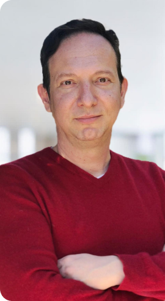
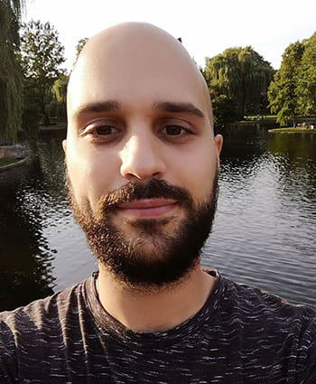

Computational proteomics and signaling
We model proteomic, phosphoproteomic, cytokine, and secretome data to infer pathway activity, regulatory structure, and disease-relevant molecular states.
National Technical University of Athens
Engineering, computation, and molecular measurement for translational biology and medicine.
BioSysLab develops measurement and computational frameworks for translational biology. The lab's core expertise is mathematical, computational, and data-driven modeling, integrating molecular measurements and clinical context with biomedical questions in cancer, chronic disease, drug response, and precision health.
Research
We study biological systems through mathematical models, machine learning & AI, network biology, and computational analysis of high-dimensional biomedical data. Wet-lab access and experimental/clinical collaborators support.
We model proteomic, phosphoproteomic, cytokine, and secretome data to infer pathway activity, regulatory structure, and disease-relevant molecular states.
We combine plasma proteins, liquid-biopsy signals, clinical variables, and causal evidence into interpretable models for early detection, monitoring, and stratification.
We develop interpretable and generative models of disease trajectories, tumor resistance, drug response, and adaptive biomedical decision-making.
We study disease progression as dynamic state landscapes, using tools such as optimal transport, stochastic models, control theory, and trajectory inference.
People

Professor, National Technical University of Athens
Prof. Alexopoulos leads BioSysLab at NTUA. He works at the interface of engineering, computation, proteomics, and medicine, with more than two decades of experience in multiplex assays and systems biology.
He has trained at Duke, MIT, and Harvard, co-founded the biotech spin-off Protavio, and co-founded the NTUA Master's program in Translational Engineering in Health and Medicine.

Postdoctoral Researcher
Nikolaos is a computational systems biologist and engineer with interests in translational oncology, tumor progression and treatment resistance, and interpretable models that connect molecular state to therapeutic decision-making.
He earned his PhD in Biological Engineering at MIT, followed by a postdoctoral appointment at MIT, after training in Mechanical Engineering at NTUA. His work also explores basic mechanisms of cellular state transitions, regulatory drivers, liquid-biopsy biomarkers, and open-source computational biology.
Laboratory Manager
Polychronis supports BioSysLab's laboratory operations and research infrastructure. He has academic experience as a Scientific Associate / Assistant Professor at TEI of Athens and is currently affiliated with the School of Pedagogical and Technological Education.
Publications
Meimetis, Magliacane, Hoang, Lauffenburger. bioRxiv, 2026.
Kanelis, Nuesch, Snuggs, Le Maitre, Alexopoulos. JOR Spine, 2026.
Gali et al. iScience, 2024.
Meimetis, Lauffenburger, Nilsson. iScience, 2024.
Skea et al. Research Square preprint, 2023.
Meimetis et al. npj Systems Biology and Applications, 2024.
Proceedings of the 16th International Joint Conference on Biomedical Engineering Systems and Technologies, 2023.
Zareifi, Chaliotis, Chala, Meimetis et al. iScience, 2022.
Courses
Teaching connects computation, biological engineering, biomedical technology, and design for health applications.
Also available in English for Erasmus students.
Also available in English for Erasmus students.
Also available in English for Erasmus students.
Vacancies
Open calls and informal inquiries will be posted here.
We welcome prospective students or collaborators with a strong fit in systems biology, computational biology, proteomics, or biomedical engineering to contact the lab with a concise research interest note and CV.
Contact
BioSysLab is located at the National Technical University of Athens, Zografou campus.
Tel: +30 210 7721666
Email: leo@mail.ntua.gr
Tel: +30 210 7721516